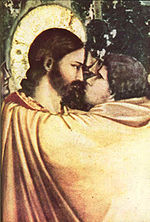

| Иуда Искариот Материал из Википедии — свободной энциклопедии |
|  Джотто ди Бондоне. «Поцелуй Иуды». Фрагмент |
Иу́да Искарио́т (ивр. יהודה איש קריות, Йеhуда иш-Крайот), сын Симона — один из апостолов
Иисуса Христа, предавший его.
ЭтимологияИуда (Йехуда) — восхваление Господа (Быт.29:35)[1], «хвала или прославленный»[2].Искариот (ивр. אִישׁ־קְרִיּוֹת, Иш-крайот, где ивр. אִישׁ — человек, муж; ивр. קְרִיּוֹת — города, слободы, кериоф, кериофа, кириаф[3]). 1. «человек из Криота», по месту своего рождения в г. Кариоте (Кариофе)[1][2][4] — возможно, тождественен городу Кирьят в Иудее[5] 2. По другой теории, поскольку слово «крайот» имеет значение пригород, то «Иш-Крайот» дословно переводится как «житель пригорода», что весьма вероятно, поскольку Иерусалим в те времена был довольно большим городом, и возле него было много маленьких селений, которые и назывались «крайот»[6] 3. Иногда значение слова выводят из арам. иш кария «лживый», или греч. σικάριος «сикарий», или от корня греч. σκαρ равного евр.-арамейск. sqr «красить» (Искариот — «красильщик»).[5][7] Прозвище «Искариот» в среде апостолов Иуда получил для отличия от другого ученика Христа, Иуды, сына Иаковлева, прозванного Фаддеем.[8] Ссылаясь на географическое расположение города Кериоф (Крайот), большинство исследователей[8] сходится во мнении, что Искариот был единственным представителем колена Иудина среди апостолов. Из евангелистов только Иоанн называет четырежды Иуду Симоновым[9]. Иоанн прямо не называет апостола сыном Симона, а значит, Симон мог являться Иуде и старшим братом, если отец Искариота преждевременно умер. |
Библейская историяПосле того как Иисус Христос был приговорён к распятию, Иуда, предавший его, раскаялся и возвратил 30 сребреников первосвященникам и старейшинам, говоря: «Согрешил я, предав кровь невинную». Они же сказали ему: «Что нам до того?»[10] И, бросив сребреники в Храме, Иуда пошёл и удавился.По одной из легенд, Иуда повесился на осине, которая с тех пор стала дрожать от ужаса при малейшем ветерке, вспоминая Иуду-предателя, и приобрела свойства магического оружия, способного поразить вампиров[источник не указан 223 дня]. После предательства и самоубийства Иуды Искариота ученики Иисуса решили выбрать нового апостола на место Иуды[11]. Они выбрали двух кандидатов: «Иосифа, называемого Варсавою, который прозван Иустом, и Матфия»[12] и помолившись Богу, чтобы он указал, кого сделать апостолом, бросили жребий. Жребий выпал Матфию, и он был сопричислен Апостолам. Имя Иуды стало нарицательным для обозначения предательства. По легенде за предательство Иуде заплатили 30 сребреников (30 серебряных шекелей, это цена раба того времени), которые так же часто используются как символ награды предателя. Иудин поцелуй стал идиомой, обозначающей высшую степень коварства. По описанию Иоанна Златоуста, Иуда, как и другие апостолы, совершал знамения, изгонял бесов, воскрешал мёртвых, очищал прокажённых, однако лишился царства небесного. Знамения не могли спасти его, потому что он был разбойник, вор и предатель Господа[13]. |
Жизнеописание Иуды Искариота в апокрифах и легендахИ. И. родился 1 апреля, рассказывается в поверьях у лужичан и поляков — этот день считается несчастливым[14].О молодых годах И. И. повествует «Сказание Иеронима о Иуде предателе». Согласно преданию родители И. И. бросают новорожденного в ковчежце в море, так как видят сон, что их сын станет погибелью для родителей. Через много лет, проведенных на острове Искариот, И. И. возвращается, убивает отца и совершает грех кровосмешения с матерью[15]. После раскаяния (например, 33 года носил во рту воду на вершину горы и поливал сухую палку, пока она не зацвела), И. И. был принят в число учеников Христа[14]. Согласно апокрифу «Арабское евангелие детства Спасителя» (глава 35 [Иуда]) И. И. жил в одном селении с Иисусом и был одержим сатаной. Когда мать привела его на лечение к маленькому Христу, И. И., разозлившись, укусил Иисуса за бок, после чего разрыдался и был исцелен. «И тот бок Иисуса, который ему Иуда поранил, иудеи потом копьем пронзили» [16]. О годах апостольства И. И. народные сказания умалчивают, словно, боятся соперничать с рассказами евангелистов, и далее повествуют лишь о погибели предателя. Согласно наиболее распространенной версии, И. И. удавился на осине или на бузине, по другим поверьям, И. И. хотел повеситься на березе, и она от страха побелела; в Польше считают также, что И. И. повесился на рябине. Кровь И. И. попала на ольху, поэтому ее древесина имеет красноватый цвет. После смерти И. И. из его тела выросли табак, хрен, лук, чеснок[14]. В апокрифическом «Евангелие от Варнавы» говорится, что Иисус изменил облик И. И.. Предателя ошибочно казнили, а ученики распространили слух о воскрешении Иисуса[17]. И. Свенцицкая: «В одном мусульманском средневековом трактате приводится версия о том, что Иуда выдал вместо Христа другого человека, а когда того казнили, он в ужасе от содеянного убил себя» [18]. По украинскому поверью, душа Иуды не имеет пристанища даже в аду; скитаясь по земле, она может вселиться в человека, нарушившего пост на Страстной неделе, и вызвать падучую[14] |
Неоднозначность мотивации предательстваКаноническими мотивами предательства Иуды считаются: сребролюбие и участие сатаны. Но синоптики не имеют единого мнения:1. Матфей считает мотивом предательства сребролюбие: «Тогда один из двенадцати, называемый Иуда Искариот, пошел к первосвященникам и сказал: что вы дадите мне, и я вам предам Его? Они предложили ему тридцать сребреников» (Мф.26:14-15); 2. Марк тоже настаивает на единственной и главенствующей роли сребролюбия: «И пошел Иуда Искариот, один из двенадцати, к первосвященникам, чтобы предать Его им. Они же, услышав, обрадовались, и обещали дать ему сребреники» (Мк.14:10-11); 3. Лука комбинирует, считая мотивом предательства и сребролюбии и участие сатаны: «Вошел же сатана в Иуду» (Лк.22:3), «…и он пошел, и говорил с первосвященниками и начальниками, как Его предать им. Они обрадовались и согласились дать ему денег» (Лк.22:4-5); 4. Иоанн умалчивает о деньгах и настаивает на участии сатаны: «И после сего куска вошел в него сатана» (Ин.13:27). М. Д. Муретов в статье «Иуда предатель»[19] приводит пять аргументов против того, чтобы считать сребролюбие «главным и руководительным мотивом в поступке Искариота»: 1. Евангелисты сами «не придают сребролюбию Иуды первенствующего значения, если прямо и ясно указывают на сатану как на главного виновника»; 2. Из рассказов евангелистов «не видно, чтобы предатель ставил на первом плане сребреники»; 3. Иуда довольствовался всего тридцатью сребрениками; 4. Иуда с легкостью расстался с деньгами; 5. «Неужели жалкий поклонник золотого кумира» отважился бы на сделку, веря в божественность Иисуса? В той же статье М. Д. Муретов называет три противоречия того, что «сатана управлял Иудой без свободного самоопределения последнего»: 1. Не ведая, что творит, Иуда не мог тяжело раскаиваться; 2. Перед синедрионом Иуда обвиняет себя, а не сатану; 3. Иисус предрекает, что будет предан человеком, а не сатаной. Неубедительность и противоречия свидетельств евангелистов дали почву различным толкованиям и интерпретациям мотивации предательства. С конца 19 века выдвинуто множество неканонических версий, пытающихся объяснить мотивы предательства Иуды: 1. Организация бунта против римского гнета (Феофилакт, Лайтфут Д., Нимейер, Андреев Л. Н., Борхес Х. Л. и др.); 2. Разочарование в учении Иисуса (Муретов М. Д., Брентано Ф.); 3. Самопожертвование (Борхес Х. Л.); 4. Божья воля (Франс А., Борхес Х. Л.); 5. Иуда - тайный агент Рима или синедриона (Булгаков М. А., Пиджаренко A. M., Еськов К. Ю.). |
Противоречие о «земле крови»Из всех синоптиков лишь один Матфей озвучивает сумму в тридцать сребреников, он же сообщает о покупке «земли крови» (Акелдамы) первосвященниками: «Сделав же совещание, купили на них землю горшечника, для погребения странников…» (Мф.27:7). Возможно, Матфей почерпнул разгадку предательства в Книге пророка Захарии: «И скажу им: если угодно вам, то дайте Мне плату Мою; если же нет, - не давайте; и они отвесят в уплату Мне тридцать сребреников. И сказал мне Господь: брось их в церковное хранилище, - высокая цена, в какую они оценили Меня! И взял Я тридцать сребреников и бросил их в дом Господень для горшечника» (Зах.11:12-13)Согласно Деяниям Апостолов, Иуда сам «приобрел землю неправедною мздою…» (Деян.1:18). Фонд «Лютеранское наследие» объясняет противоречие следующим образом: землю купили первосвященники, но поскольку они это сделали на деньги Иуды (и, возможно, от его имени), покупка приписывается самому Иуде[20]. Серьезные затруднения все же возникают при попытке объяснить разницу в написании: 1. Слово «поле» (греч. agros), стоит после глагола agorazo - "купить на открытом рынке" (от agora - "рыночная площадь") (Мф.27:7); 2. Слово «участок» (греч. chorion - земельная собственность или небольшое хозяйство) стоит после глагола ktaomai – «получить во владение» (Деян.1:18). |
Плата за предательствоЕдинственный из евангелистов Матфей утверждает: «Они предложили ему тридцать сребреников» (Мф.26:15). Каноническая версия считает сумму достаточной для предательства, раз на нее можно было приобрести участок земли в черте города.Шекель (сребреник) равен 4 динариям[1]. Динарий – дневная плата рабочего на винограднике (Мф.20:2) или стоимость хиникса пшеницы (дневного рациона мужчины) (Откр.6:6). Около 4 месяцев нужно отработать на винограднике, чтобы получить тридцать сребреников. Опять же, миро, которым Мария из Вифании умастила Иисуса ((Мк.14:5), стоило 300 динариев, что равняется 75 сребреникам или чуть меньше года работы на винограднике. Сегодня[источник не указан 56 дней] сребрениками Иуды считают финикийские тетрадрахмы с профилем Мелькарта, отчеканенные в Тире и широко распространенные Иудее. Изготовленные из серебра и имеющие вес в 14 грамм они могли находиться в обращении как другие римские и греческие монеты. Ими же иудеи могли ежегодно платить в храм. Существует встречная версия: в иудейском храме не могли храниться монеты изображающие иноземных богов, но предполагается, что подобные монеты сберегались для «грязных» расчетов. |
Противоположность сведений о смерти Иуды ИскариотКанонические версии гибели Иуды Искариота:1. «…бросив сребреники в храме, он вышел, пошел и удавился» (Мф.27:5); 2. «…и когда низринулся, расселось чрево его, и выпали все внутренности его» (Деян.1:18). Марк и Иоанн промолчали о смерти Иуды. Папий примиряет обе версии, говоря о том, что Иуда повесился, но веревка оборвалась и он «низринулся» и «расселось чрево его». Папию же приписывают версию рассказа о том, что Иуда купил землю и дожил до старости, но умер от загадочной болезни (раздулся до чудовищных размеров). Один из апокрифов повествует о распятии Иуды[17]. |
Иуда Искариот в литературе и искусствеИстория Иуды привлекала целый ряд писателей Нового времени.Прямо и опосредованно история И. И. осмысливается в притче М. Е. Салтыкова-Щедрина "Христова ночь" (1886) и романе "Господа Голавлевы", в повести Т. Гедберга "Иуда. История одного страдания" (1886), в драме Н. И. Голованова "Искариот" (1905) и повести Л. Н. Андреева "Иуда Искариот и другие" (1907), в драматической поэме Л. Украинки "На поле крови" (1909), в поэме А. Ремизова "Иуда-предатель" (1903) и его же пьесе "Трагедия об Иуде, принце Искариотском" (1919), в драме С. Черкасенко "Цена крови" (1930), рассказе Ю. Нагибина "Любимый ученик", романах Н. Мейлера "Евангелие от Сына Божьего", романе-апокрифе Г. Панаса "Евангелие от Иуды" (1973), в психологическом детективе П. Буало и Т. Нарсежака "Брат Иуда" (1974), притче В. Быкова "Сотников" (1970), романах М. А. Астуриаса "Страстная пятница" (1972), А. И. Солженицына "В круге первом" (линия Руськи с его "игрой в Иуду"), Р. Редлиха "Предатель" (1981), Н. Евдокимова "Трижды величайший, или Повествование о бывшем из небывшего" (1984), романе А. и Б. Стругацких "Отягощеные злом, или Сорок лет спустя" (1988) и др., а также в многочисленных романах, посвященных осмыслению истории Иисуса Христа, вплоть до "Евангелия от Иисуса" Ж. Сарамаго (1998). Одной из самых примечательных интерпретаций истории И. И. является повесть Леонида Андреева «Иуда Искариот», где был создан сложный и противоречивый образ Иуды, любящего, но предающего Христа. Также в произведении Аркадия и Бориса Стругацких «Отягощённые злом, или сорок лет спустя», Иуда представляется как нищий олигофрен, прибившийся к компании Христа и полюбивший последнего. Христос, попав в Иерусалим, чуть не затерялся среди лжепророков и разных «учителей», и единственным вариантом выделиться и привлечь к себе людей для него была мученическая смерть. Христос дает чёткие инструкции дурачку Иуде, куда идти и что говорить, который делает это, не понимая значения своих действий. Иуда из Кириафа в романе «Мастер и Маргарита» в интерпретации Михаила Афанасьевича Булгакова красивый молодой человек, ловелас, лишённый моральных принципов и готовый из-за денег пойти на любое преступление. ЖивописьВ европейской иконографии и живописи И. И. традиционно предстает как духовный и физический антипод Иисуса, как на фреске Джотто «Поцелуй Иуды» или на фресках Беато Анджелико, где он изображен с черным нимбом над головой. В византийско-русской иконографии И. И. обычно повернут в профиль, как и бесы, чтобы зритель не встретился с ним глазами. В христианской живописи И. И. изображается темноволосым и смуглым человеком, чаще всего молодым, безбородым человеком, иногда как бы негативным двойником Иоанна Богослова (обычно в сцене тайной вечери). На иконах называемых «Страшный суд» И. И. часто изображается сидящим на коленях у сатаны. В искусстве Средневековья и раннего Возрождения на плече И. И. часто сидит демон, нашептывающий ему дьявольские слова. Один из распространеннейших мотивов в живописи, начиная с эпохи раннего Ренессанса, — повешение И. И. на дереве; при этом он часто изображается с кишками, выпавшими наружу (эта же деталь была популярной в средневековых мистериях и мираклях). [править] ФильмыИуда должен был предать своего учителя, чтобы Иисус смог выполнить свою миссию, и Иуда это осознавал. В таком понимании Иуда тоже, как и Христос, приносит себя в жертву. В частности, так трактует поступок Иуды Искариота в своем романе Никос Казантзакис сценарную адаптацию которого осуществил режиссёр Мартин Скорсезе в своём фильме Последнее искушение Христа. В фильме «Дракула 2000» Дракула является никем иным, как Иудой Искариотом, проклятым ходить по земле в наказание за предательство Иисуса, ведь даже ад отказался принять его. Интересно, что того же мнения придерживался Ги де Мопассан. Он умышленно не исправил рассказ рыбака о Вечном Жиде «Старик Иуда». |
Памятники Иуде в Советской РоссииВ рамках антирелигиозной кампании коммунистов в августе 1918 года в Свияжске был установлен памятник Иуде Искариоту. Идеологическую поддержку этому акту осуществляли Лев Троцкий, Всеволод Вишневский и Демьян Бедный, которые участвовали в торжественной церемонии[21] [22]. Скульптура представляла из себя буро-красную фигуру человека — больше натуральной величины, с обращенным к небу лицом, искаженным гримасой, судорожно срывающего с шеи веревку. 10 сентября того же года памятник Иуде исчез, позднее на том же месте был установлен памятник Ленину[23].В том же году памятник Иуде, как «борцу с христианством» и «лжерелигией» был установлены в Козлове (ныне — Мичуринск). Спустя несколько дней он был разбит при невыясненных обстоятельствах местными жителями[24]. а В 1921 году памятник Иуде был установлен в Тамбове[25]. В планах Льва Троцкого была установка памятников Иуде и в Иваново-Вознесенске и других городах РСФСР, но им не было суждено сбыться. Стоит отметить, что один из идеологов установки памятника Демьян Бедный в 1925 году опубликовал поэму «Новый завет без изъяна евангелиста Демьяна», в которой он ернически пересказывал евангелие, Иуда Искариот в ней назван «пламенным еврейским патриотом»[26]. Критика неканонического восприятия Иуды ИскариотаСогласно сторонникам канонической версии предательства, мотивация Иуды вовсе не выглядит нелепой, поскольку каждый человек имеет свободу воли. Иуда же вполне мог быть сребролюбивым человеком, что видно из Евангелия: «Мария же, взяв фунт нардового чистого драгоценного мира, помазала ноги Иисуса и отёрла волосами своими ноги его; и дом наполнился благоуханием от мира. Тогда один из учеников его, Иуда Симонов Искариот, который хотел предать его, сказал: "Для чего бы не продать это миро за триста динариев и не раздать нищим?" Сказал же он это не потому, чтобы заботился о нищих, но потому что был вор. Он имел при себе денежный ящик и носил, что туда опускали»[27]; «А как у Иуды был ящик, то некоторые думали, что Иисус говорит ему: купи, что нам нужно к празднику, или чтобы дал что-нибудь нищим»[28].В православных толкованиях и в литургических (богослужебных) текстах подчёркивается[источник не указан 223 дня], что Христос, зная о том, что Иуда часто ворует из тех денег, которые предназначались для раздачи нищим, не прогонял его от себя и не лишал его благодатных даров, с помощью которых Иуда, как и все остальные апостолы, исцелял больных и изгонял бесов. И даже во время предательского поцелуя Христос не злится на предателя, обращаясь к нему: «друг», ожидая покаяния Иуды. |
Примечания1. ↑ 1 2 3 Ринекер Ф., Майер Г. Библейская Энциклопедия Брокгауза. Российское Библейское Общество, 1999. ISBN 0000481 2. ↑ 1 2 Э. Нюстрем. Библейский энциклопедический словарь. Библия для всех, 2001, 517 стр., ISBN 5-7454-0452-3 3. ↑ О. Н. Штейнберг. Еврейский и халдейский этимологический словарь к книгам Ветхого Завета. Вильна, 1878 4. ↑ Архимандрит Никифор. Библейская Энциклопедия. Москва, 1891 5. ↑ 1 2 Статья «Иисус» в Электронной еврейской энциклопедии 6. ↑ Марк Абрамович. Иисус, еврей из Галилеи 7. ↑ Энциклопедия «Мифы народов мира» 8. ↑ 1 2 Библейский словарь Брокгауза 9. ↑ Евангелие от Иоанна, 6:71; 12:4; 13:2,26. 10. ↑ Евангелие от Матфея, 27:4. 11. ↑ Деяния Апостолов, 1:21 12. ↑ Там же, 1:23 13. ↑ Иоанн Златоуст. Полное собрание сочинений. Том третий. Книга первая. Беседы о надписании книги деяний 14. ↑ 1 2 3 4 Соловьев С. В. К легендам об Иуде — предателе. Харьков, 1895 15. ↑ Страсти Господни. Москва, Чепральской, 1792, 370 стр., Глава 31. Сказание Святого Иеронима, о иуде предателе Господнего 16. ↑ А. П. Скогорев. Апокрифические деяния апостолов. Арабское Евангелие детства Спасителя. СПб.: Алетейя, 2000, 480 стр., ISBN 5-89329-275-8 17. ↑ 1 2 Евангелие от Варнавы. Ансар, 2007, 288 стр., ISBN 5-98443-021-5 18. ↑ Г. Панас. Евангелие от Иуды М., «Радуга», 1987 (И. Свенцицкая. Человек, миф, история в книге Генрика Панаса «Евангелие от Иуды») 19. ↑ Книга Иуды: Антология (состав. С. Ершов). СПб.,Амфора, 2006, 430 стр., ISBN 5-367-00192-0 20. ↑ Фонд «Лютеранское наследие»: Свет истинный, Фрагменты исторического содержания из Нового Завета 21. ↑ «Большевики в 1918—1921гг воздвигали памятники Иуде», статья Бориса Романов http://www.proza.ru/2009/09/15/1113 22. ↑ «The Red Garden» Kehler Henning, 1922 (англ., перевод с датского). 23. ↑ http://www.evening-kazan.ru/article.asp?from=number&num_dt=16.07.2005&id=19193 & nbsp; 24. ↑ http://www.library.ryazan.su/rus-go-cms-page-3946.html 25. ↑ http://www.ej.ru/?a=note&id=9681 26. ↑ http://www.ateizm.ru/lit8.htm 27. ↑ См. Евангелие от Иоанна, 12:3-6 28. ↑ Там же, 13:29 |